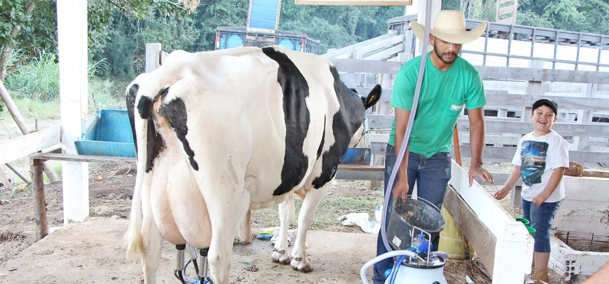

Bem-vindos à Bacia Leiteira [Região de Laranjal PR]
Uma região dedicada à produção de leite de alta qualidade, impulsionando a economia local e fornecendo produtos nutritivos para a comunidade.
Sobre a Bacia Leiteira
Aqui você encontrará informações sobre a história da nossa bacia leiteira, nossos valores, e nosso compromisso com a qualidade e sustentabilidade na produção de leite.
- História da região
- Nossos valores
- Sustentabilidade
- Qualidade do leite
Nossa Produção
Conheça os detalhes da nossa produção leiteira, desde as práticas de manejo do gado até os produtos finais que chegam à sua mesa.
- Manejo do gado
- Tecnologias utilizadas
- Tipos de leite produzidos
- Controle de qualidade
Associados
Veja a lista de produtores e empresas que fazem parte da nossa bacia leiteira, contribuindo para o seu crescimento e sucesso.
- [Nome do Produtor/Empresa 1]
- [Nome do Produtor/Empresa 2]
- [Nome do Produtor/Empresa 3]
Entre em Contato
Tem alguma dúvida ou gostaria de saber mais sobre a nossa bacia leiteira? Entre em contato conosco!